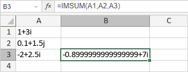

IMSUM Funkcija
Funkcija IMSUM je jedna od inženjerskih funkcija. Koristi se za vraćanje zbira navedenih kompleksnih brojeva.
Sintaksa
IMSUM(inumber1, [inumber2], ...)
Funkcija IMSUM ima sledeće argumente:
| Argument | Opis |
|---|---|
| inumber1/2/n | Do 255 kompleksnih brojeva izraženih u obliku x + yi ili x + yj. |
Napomene
Kako primeniti funkciju IMSUM.
Primeri
Slika ispod prikazuje rezultat koji vraća funkcija IMSUM.
